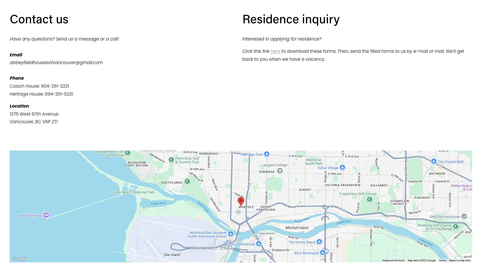
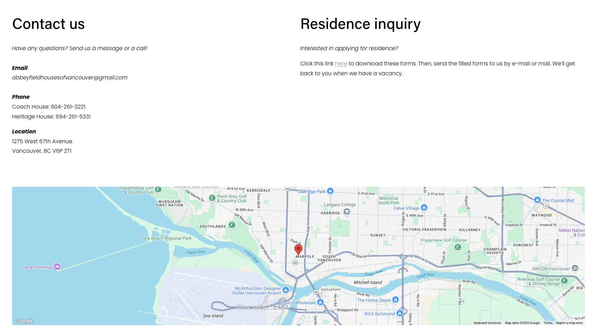

uOttawa Kanata North Campus Projects
Internship deliverables across campus digital experiences.

During my internship at Abbeyfield Vancouver, I led a comprehensive UX redesign of their official website. The original site lacked clarity in layout and navigation, and did not reflect the organization’s mission effectively. I conducted a full content review, proposed new information architecture, and implemented a more modern and user-friendly interface. This redesign enhanced site usability, improved visual coherence, and better communicated the values of Abbeyfield to its audiences.
Redesigned the website’s top navigation bar to improve clarity and reduce visual clutter. The original navbar contained too many links and lacked intuitive grouping, which made it difficult for users—especially seniors—to find relevant information. The new version streamlines the structure, consolidates similar items, and improves accessibility across devices.
Redesigned the homepage to provide a clear and warm introduction to Abbeyfield Vancouver. The previous homepage lacked structure and did not effectively communicate the organization’s mission. I introduced a concise summary of who Abbeyfield is, paired with high-quality images showcasing the welcoming living environment. The new design helps visitors—especially seniors and their families—quickly understand the purpose and atmosphere of the organization.

Created a brand-aligned “About Us” page to clearly introduce Abbeyfield Vancouver’s values and mission. The previous version was text-heavy and inconsistent in tone. I restructured the content to focus on key messages—who we are, what we do, and why it matters—while applying the organization’s colors, typography, and visual language. The result is a welcoming, easy-to-read page that strengthens trust and clarity for first-time visitors.
Designed several supporting pages—House Features & Amenities, Building Gallery, Our History, and Contact Us—with a unified visual language that aligns with Abbeyfield Vancouver’s brand. Each page was simplified to present key information in a clear and accessible way, prioritizing readability and intuitive layout. I ensured that color usage, typography, and spacing remained consistent across all pages, contributing to a cohesive and trustworthy user experience.


 

Internship deliverables across campus digital experiences.
UX improvements that clarify ISS services and navigation.